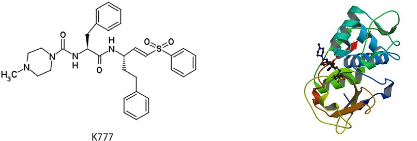
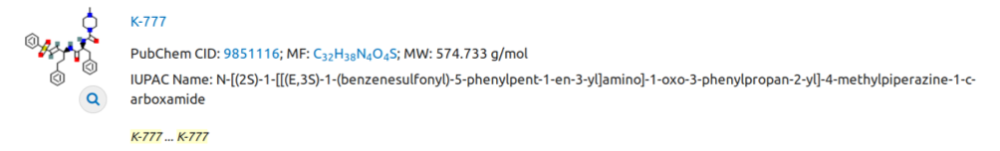
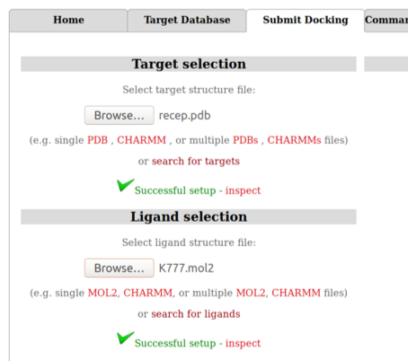
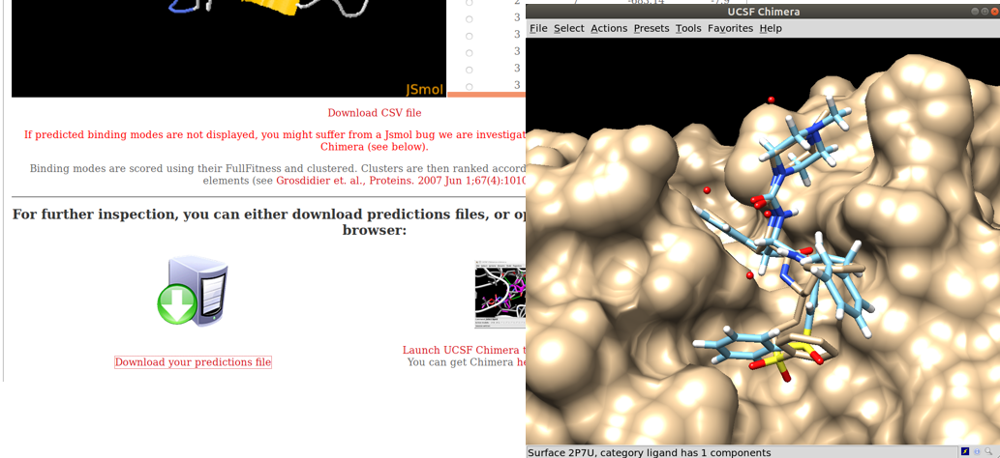
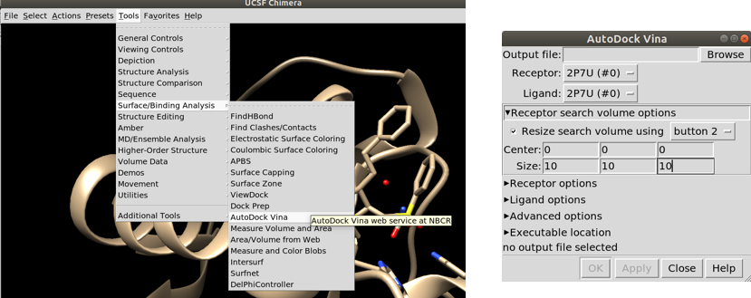
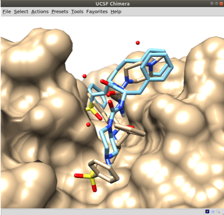

Docking molecular automático
Prof. Euzébio G. Barbosa (DFAR/UFRN/BioME)
Observação: O Tutorial abaixo está sendo reproduzido com o consetimento do professor, apenas para fins didáticos.
Docking molecular, atracamento molecular ou ancoramento molecular é uma técnica para obter um complexo de interação para duas ou mais moléculas. Mais comumente temos a interação entre uma macromolécula (proteína) em sítio desejado com uma molécula pequena. A estrutura da proteína geralmente é mantida fixa e a estrutura do ligante pode mudar de conformação (os ciclos não mudam de conformação). Podemos ter o acoplamento entre duas proteínas (Protein-protein docking) ou entre duas moléculas pequenas também. Neste curso iremos trabalhar com o docking proteína-ligante e docking proteína-proteína.
Existem diversos programas pagos (e caros) que realizam docking de uma maneira bastante exata e eficaz. O Auto-dock Vina é um dos pacotes livres mais utilizados. Além dele, uma opção on-line fácil de utilizar e com resultados excelentes é o SwissDock.
Para docking Proteína-Proteína existem várias opções. Este link enumera diversas ferramentas para esse fim: https://omictools.com/protein-protein-docking-category. Também podem ser citados o programa HADDOCK, que funciona bem e é bastante fácil de utilizar. Existem também diversos servidores, como: ZDOCK ou ClusPro entre diversos outros.
Parte 1
Docking ligante proteína com UCSF Chimera e Autodock-Vina
Eu gravei um tutorial bem simples (Sem narração) sobre como fazer docking com o autodock-vina acoplado no UCSF Chimera:
A playlist acima cobre todas as etapas necessárias para conseguir sua conformação ancorada no sítio. Contudo esta maneira de realizar docking não é a mais eficiente. A melhor estilo de se fazer um ancoramento é utilizando o mínimo possível de interfaces gráficas. Quando tratarmos de triagem virtual estes detalhes serão elucidados. Um outro tutorial utilizando o Autodock-Vina pode também ser encontrado nessa mesma página.
Parte 2
Docking ligante proteína com servidor SwissDock
Para este tutorial utilizaremos os dados da estrutura 2P7U, (The crystal structure of rhodesain, the major cysteine protease of T. brucei rhodesiense, bound to inhibitor K777). A molécula K777 (mostrada abaixo) é capaz de se ligar a proteína Rodesaína do T. brucei. A estrutura 2P7U já contém o mesmo ligante. O que faremos estão é um Redock, um procedimento onde o mesmo ligante é colocado no seu próprio sítio. Se a estrutura experimental for parecida com a estrutura simulada podemos atestar a qualidade do algoritmo utilizado para o docking.
Esta é também uma excelente estratégia para você treinar suas habilidades em docking.

Baixe a estrutura PDB da 2P7U e, com o auxílio do programa UCSF Chimera, remova o ligante. Salvando a proteína como recep.pdb. Em seguida, baixe a estrutura do K777 do PubChem em 3D. Salve esta estrutura como K777.sdf ou qualquer outro formato de arquivo 3D.

Você precisará obrigatoriamente de um formato MOL2. Se não for o caso basta converter, usando o seguinte comando em um terminal:
obabel K777.sdf -O K777.mol2
Faremos agora o upload dos dois arquivos no servidor SwissDock.
A figura abaixo mostra como fica se tudo estiver correto. Dê um nome para o Job e pronto. Basta esperar para ver o resultado. Vai demorar bastante. Muito mesmo.

O SwissDock dá diversas estruturas e é possível baixar todas no site e visualizar os resultados no UCSF Chimera:

Parte 3
Docking ligante proteína com servidor Autodock-Vina
Realizar docking por linha de comando ao invés de utilizar um servidor ou uma interface gráfica é a possibilidade de automatização das etapas. O arquivo principal para realizar um docking por linha de comando é a criação de um arquivo de configuração que tem um formato muito parecido com o seguinte (Arguivo config.cfg):
receptor = recep.pdbqt
ligand = K777.pdbqt
center_x =
center_y =
center_z =
size_x =
size_y =
size_z =
Basta copiar e colar no gedit e salvar como config.cfg.

As informações são necessárias para o centro do sítio ativo e também o tamanho de uma caixa que englobe todo o sitio. Iremos usar o UCSF Chimera pera obter esses valores. Para isso é só abrir o Arquivo 2P7U.pdb e definir uma caixa ao redor do ligante.

Coloque valor para o Center e Size como na figura, com a opção `Resize search volume options. Reposicione a caixa até envolver o ligante como um todo. Não crie uma caixa muito grande, pois o ligante pode parar fora do local desejado. Não crie uma caixa muito pequena, ou ligante é vai ficar espremido no sítio de ligação.
Anote os valores e complete o arquivo de configuração:
receptor = recep.pdbqt
ligand = K777.pdbqt
center_x = -7.47275
center_y = 2.47648
center_z = 9.35775
size_x = 16.9096
size_y = 21.9832
size_z = 17.5384
Agora basta converter os arquivos para .pdbqt:
obabel K777.mol2 -O K777.pdbqt python /opt/UCSF/Chimera64-1.13rc/lib/python2.7/site-packages/AutoDockTools/Utilities24/prepare_receptor4.py -r recep.pdb -o recep.pdbqt
Agora vamos realizar o procedimento do docking, com o seguinte comando:
vina --config config.cfg --out docked.pdbqt
Para ver o resultado, vamos abrir o arquivo 2P7U.pdb e utilizar a ferramenta ViewDock no UCSF Chimera. Pela figura ao lado vemos que o procedimento de redocking foi muito ruim. Esse é um dos grandes problemas do docking, certamente em alguns casos será coincidente, mas a metodologia tem muitas falhas (Melhor ficar ciente). O Resultado do SwissDock foi bem melhor que do Autodock-Vina. Revelando a fragilidade do Vina neste sistema em particular.

Posicionamento manual do ligante
Docking manual
Muitas vezes, as energias da função de avaliação do docking não são o objetivo principal do seu estudo, e sim obter uma conformação inicial para realizar por uma dinâmica molecular. Eu gravei um procedimento para docking manual no YouTube:
Posicionamento manual do ligante - Ver no YouTube
O procedimento é muito similar ao tutorial de modificação de conformação de ciclos realizado anteriormente.